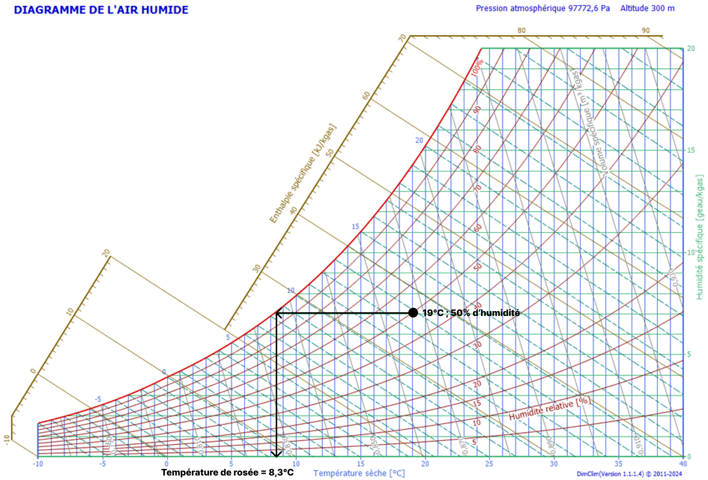

Introduction
La condensation des parois est un phénomène physique fréquent dans les bâtiments, où la vapeur d'eau de l'air intérieur se transforme en eau liquide sur ou à l'intérieur des surfaces
froides. Ce cours explore les mécanismes de ce phénomène, ses impacts, et les techniques pour le prévenir ou le gérer, surtout dans le contexte de la construction durable et de l'efficacité
énergétique.
Les Bases Physiques de la Condensation
La condensation est le processus par lequel la vapeur d'eau dans l'air se transforme en liquide lorsque l'air refroidit au-delà du point de rosée. Ce point de rosée varie avec l'humidité
relative et la température de l'air ambiant.
Concepts clés :
-
Point de rosée : C'est la température à laquelle l'air doit être refroidi pour que la vapeur d'eau commence à condenser. Par exemple, si l'air intérieur est à 20°C avec
une humidité relative de 60%, le point de rosée serait environ à 12°C.
-
Saturation de l'air : L'air peut contenir une certaine quantité de vapeur d'eau avant d'être saturé; au-delà de cette capacité, la vapeur se condense (humidité relative =
100%).
-
Influence de la température et de l'humidité : Une augmentation de l'humidité relative ou une diminution de la température peut provoquer la condensation. Par exemple, en
hiver, l'air froid extérieur peut refroidir suffisamment les parois pour que la condensation se produise à l’intérieur du logement.
-
Pression partielle de vapeur d’eau : L'air contient toujours une certaine quantité de vapeur d'eau. Cette vapeur d'eau exerce une pression partielle, appelée pression
partielle de vapeur d’eau. Plus il y a de vapeur d'eau dans l'air, plus la pression de vapeur est élevée. La différence de pression entre l’intérieur d’un logement et l’air extérieur va
créer un transfert de vapeur d’eau dans les parois et amener des risques de condensation.
-
Pression de vapeur saturante : Pression à partir de laquelle il y a condensation. Si la pression partielle de vapeur d’eau dépasse la pression de vapeur saturante, alors
il y a condensation.
Pour trouver le point de rosée, on utilise le diagramme de l’air humide, aussi appelé diagramme psychrométrique (image ci-dessous). En abscisse on retrouve la température de l’air et en
ordonnée la quantité d’eau contenue dans un 1 kg d’air sec.

Mécanismes de Condensation
Il existe deux types principaux de condensation dans les bâtiments :
-
Condensation superficielle : Elle se produit sur les surfaces visibles comme les fenêtres ou les murs extérieurs. C'est ce que l'on observe souvent le matin sur les vitres
des fenêtres.
-
Condensation interstitielle : Elle se produit à l'intérieur des structures, elle peut ne pas être visible mais causer des dommages significatifs. Elle se produit lorsque
la vapeur d'eau traverse les matériaux de construction et rencontre une zone plus froide où elle se condense.
- Ponts thermiques : Ce sont des zones où la chaleur s'échappe plus facilement, créant des points froids où la condensation est plus probable.
Impacts de la Condensation
- Sur la santé : La condensation peut mener à la croissance de moisissures, exacerbant les allergies, l'asthme et d'autres problèmes respiratoires.
-
Sur les structures : L'humidité due à la condensation peut provoquer la dégradation des matériaux de construction, réduire l'efficacité de l'isolation, et entraîner des
coûts de réparation élevés.
- Efficacité énergétique : Une mauvaise gestion de la condensation peut augmenter les besoins en chauffage, donc consommer plus d'énergie.
Prévention et Solutions Techniques
-
Isolation thermique : Une bonne isolation réduit les gradients de température à travers les parois, limitant les zones où la condensation peut se former. L'isolation doit
être continue et sans interruption.
-
Ventilation : Une ventilation adéquate évacue l'humidité de l'intérieur, réduisant la probabilité de condensation. Des systèmes de ventilation avec récupération de chaleur
peuvent être particulièrement efficaces.
-
Choix des matériaux : Utiliser des matériaux de construction avec des propriétés de perméabilité à la vapeur d'eau bien pensées. Par exemple, une barrière de vapeur (frein
vapeur ou pare vapeur) peut être placée du côté chaud des parois pour empêcher la vapeur de pénétrer dans les zones froides.
- Conception architecturale : Éviter les ponts thermiques par une conception intelligente et l'ajout d'éléments isolants supplémentaires aux points sensibles.